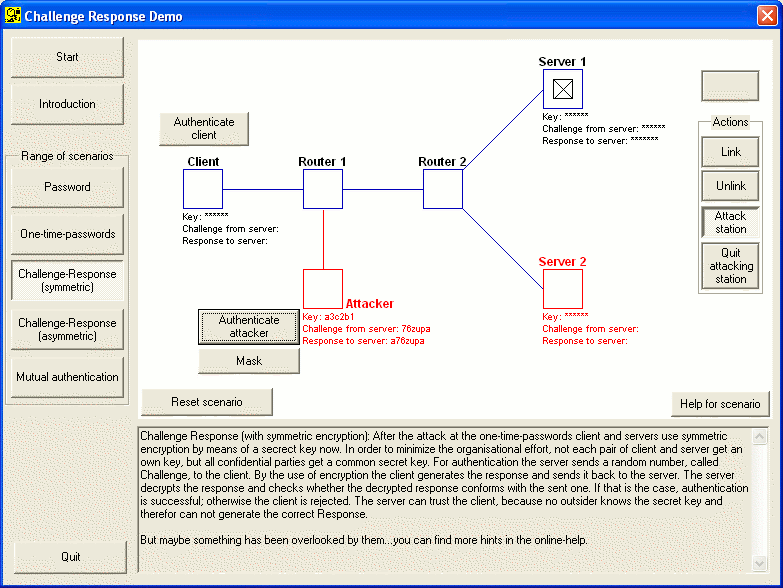

This solution aims to the point that all communication partners, thus Server 1, Server 2 and Client use the same symmetric key. If only one of these parties is untrustworthy the hole system gets compromised.
This is a specific problem for the implementation of symmetric cryptography. Thus, in our is case it is sufficient obtain the secret key from one server without authorization to authenticate with all the other servers. In scenario you proceed as follows:
